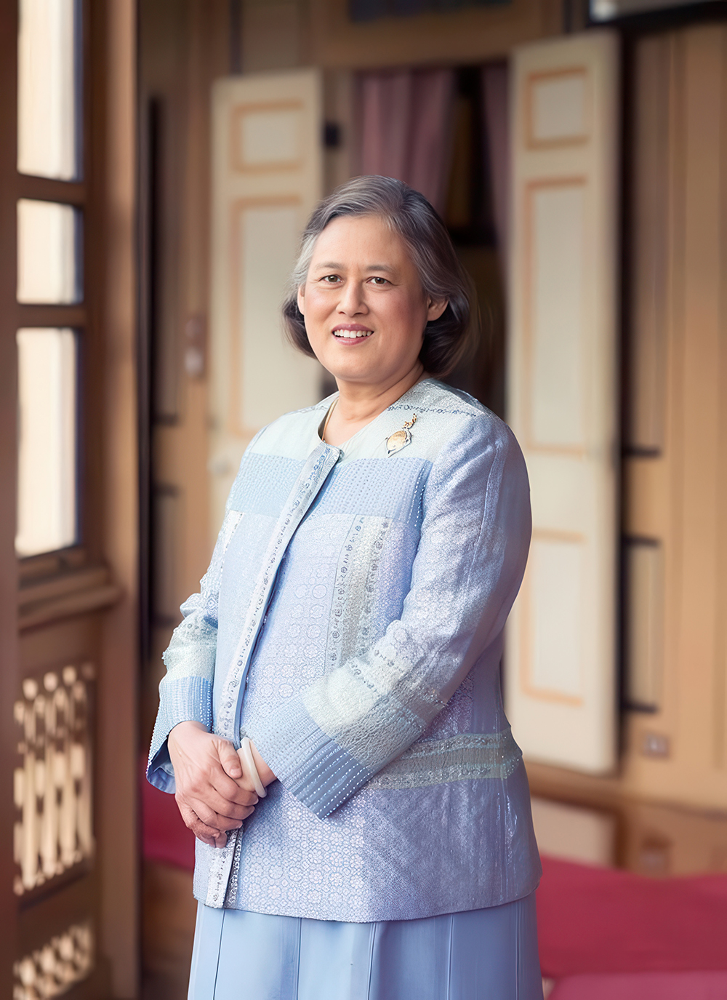
สมเด็จพระกนิษฐาธิราชเจ้า
กรมสมเด็จพระเทพรัตนราชสุดา ฯ
สยามบรมราชกุมารี
กรมสมเด็จพระเทพรัตนราชสุดา ฯ
สยามบรมราชกุมารี
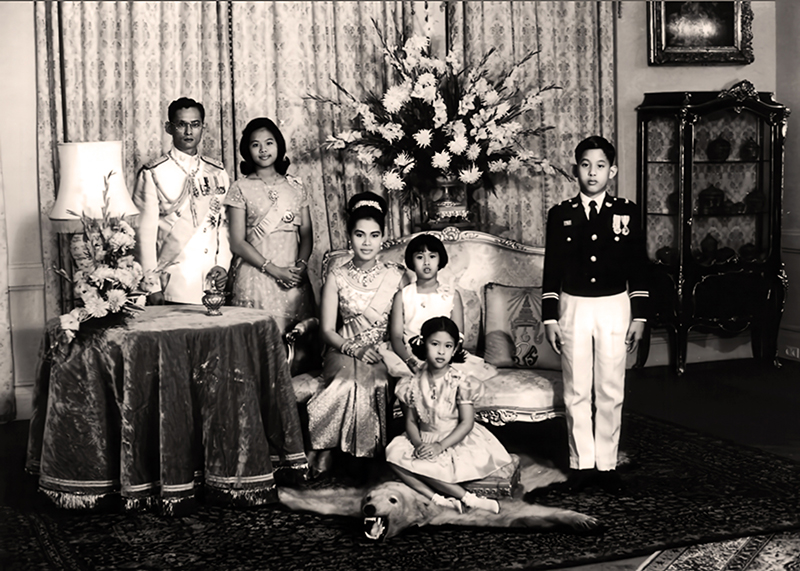
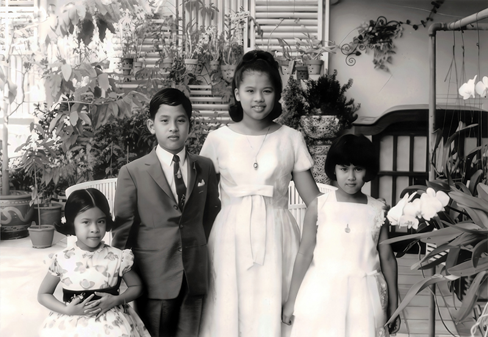
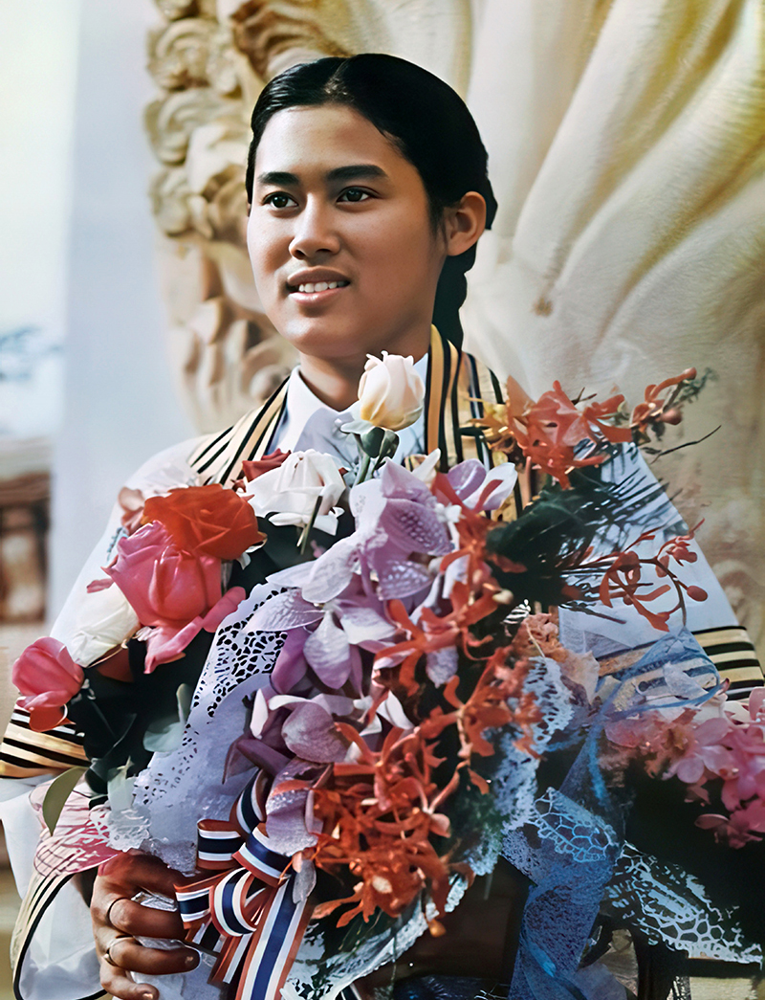
พระราชประวัติ
สมเด็จพระกนิษฐาธิราชเจ้า กรมสมเด็จพระเทพรัตนราชสุดา เจ้าฟ้ามหาจักรีสิรินธร มหาวชิราลงกรณวรราชภักดี
สิริกิจการิณีพีรยพัฒน รัฐสีมาคุณากรปิยชาติ สยามบรมราชกุมารี
ทรงเสด็จพระราชสมภพ เมื่อวันที่ ๒ เมษายน พุทธศักราช ๒๔๙๘ ณ พระที่นั่งอัมพรสถาน พระราชวังดุสิต เป็นพระราชธิดาในพระบาทสมเด็จพระบรมชนกาธิเบศร มหาภูมิพลอดุลยเดชมหาราช บรมนาถบพิตร และ สมเด็จพระนางเจ้าสิริกิติ์ พระบรมราชินีนาถ พระบรมราชชนนี ได้รับพระราชทานพระนามว่า
สมเด็จพระเจ้าลูกเธอ เจ้าฟ้าสิรินธรเทพรัตนสุดา กิติวัฒนาดุลโสภาคย์
พร้อมทั้งประทานคำแปลว่า “นางแก้ว” อันหมายถึงหญิงผู้ประเสริฐ และทรงมีพระนามลำลองในครอบครัวว่า “ทูลกระหม่อมน้อย” ซึ่งแสดงถึงความรัก ความสนิทสนมที่พระราชวงศ์มีต่อพระองค์ ทรงมีพระโสธรเชษฐภคินี ๑ พระองค์ คือ ทูลกระหม่อมหญิงอุบลรัตนราชกัญญา สิริวัฒนาพรรณวดี มีพระโสธรเชษฐา ๑ พระองค์ คือ พระบาทสมเด็จพระเจ้าหัว และมีพระขนิษฐา ๑ พระองค์ คือสมเด็จพระเจ้าน้องนางเธอ เจ้าฟ้าจุฬาภรณวลัยลักษณ์ อัครราชกุมารี กรมพระศรีสวางควัฒน วรขัตติยราชนารี
ทรงเจริญพระชนมพรรษาท่ามกลางพระราชวงศ์ที่เปี่ยมไปด้วยคุณธรรมและความเมตตาต่อพสกนิกร จึงมีพระราชจริยวัตรที่เปี่ยมไปด้วยความสุภาพอ่อนโยน และในขณะเดียวกันก็ทรงพระวิริยอุตสาหะในการประกอบพระราชกรณียกิจนานัปการอย่างมุ่งมั่น ไม่ย่อท้อต่อความลำบาก ทรงได้รับการอบรมดูแลอย่างใกล้ชิดจากสมเด็จพระบรมชนกนาถ และสมเด็จพระบรมราชชนนีพันปีหลวง ในการพัฒนาคุณภาพชีวิตราษฎรให้ดีขึ้นมาโดยตลอด
พ.ศ. ๒๔๙๘
๒๔๙๘ พระราชสมภพ ณ พระที่นั่งอัมพรสถาน พระราชวังดุสิต
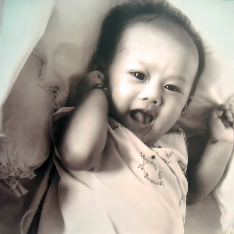
พ.ศ. ๒๕๐๑ - ๒๕๑๑
๒๕๐๑ ทรงเริ่มศึกษาระดับอนุบาล ที่ ร.ร.จิตรลดา
๒๕๑๐ ทรงสำเร็จการศึกษาระดับประถมฯ คะแนนอันดับ ๑ ของประเทศ
๒๕๑๑ ทรงเริ่มศึกษาระดับมัธยม ที่ ร.ร.จิตรลดา
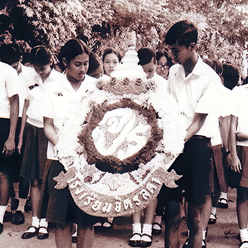
พ.ศ. ๒๕๑๕ - ๒๕๒๐
๒๕๑๕ ทรงสอบ ม.๕ แผนกศิลป์ ได้ที่ ๑ ของประเทศ (๘๙.๓%)
๒๕๑๖ ทรงเริ่มศึกษาคณะอักษรศาสตร์ จุฬาลงกรณ์มหาวิทยาลัย
๒๕๒๐ ทรงสำเร็จการศึกษาอักษรศาสตร์บัณฑิต สาขาประวัติศาสตร์ (เกียรตินิยมอันดับ ๑) จุฬาลงกรณ์มหาวิทยาลัย
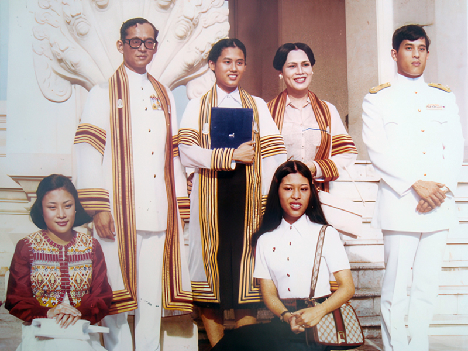
พ.ศ. ๒๕๒๐ (สภากาชาดไทย)
๒๕๒๐ ทรงดำรงตำแหน่งอุปนายิกาผู้อำนวยการสภากาชาดไทย
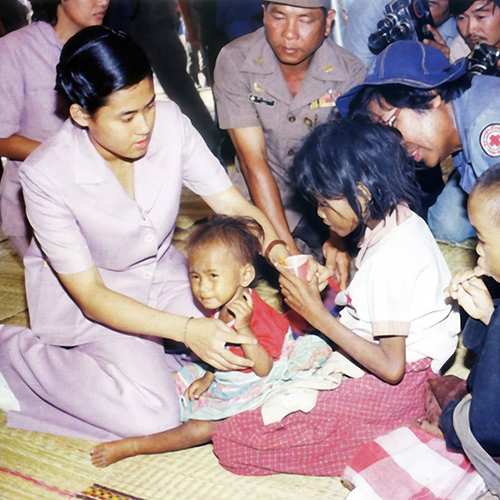
พ.ศ. ๒๕๒๐ (สถาปนาพระอิสริยศักดิ์)
๒๕๒๐ พระราชพิธีสถาปนาพระอิสริยศักดิ์ในการพระราชพิธีเฉลิมพระชนมพรรษา
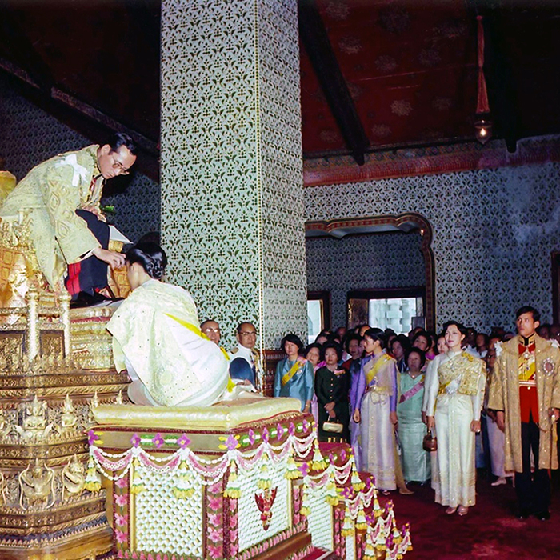
พ.ศ. ๒๕๒๑ - ๒๕๒๙
๒๕๒๑ ทรงเริ่มศึกษาปริญญาโทที่จุฬาฯ และศิลปากร พร้อมกัน
๒๕๒๓ ทรงเริ่มโครงการเกษตรเพื่ออาหารกลางวัน
๒๕๒๙ ทรงสำเร็จการศึกษาระดับปริญญาดุษฎีบัณฑิต สาขาพัฒนศึกษาศาสตร์ มหาวิทยาลัยศรีนครินทรวิโรฒ (มศว.)
พ.ศ. ๒๕๓๑ (มูลนิธิชัยพัฒนา)
๒๕๓๑ ทรงดำรงตำแหน่งองค์ประธาน กรรมการมูลนิธิชัยพัฒนา
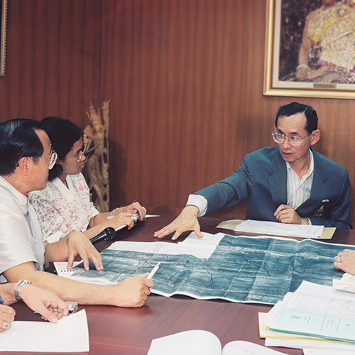
พ.ศ. ๒๕๓๑ - ๒๕๓๗
๒๕๓๑ ทรงเริ่มดำเนินงานโครงการนักเรียนในพระราชานุเคราะห์ฯ
๒๕๓๓ ทรงเริ่มโครงการควบคุมโรคขาดสารไอโอดีน และเสด็จฯ เยือน สปป.ลาว ครั้งแรก
๒๕๓๔ ทรงจัดตั้งกองทุนพัฒนาเด็กและเยาวชนในถิ่นทุรกันดาร (กพด.)
๒๕๓๕ ทรงเริ่มโครงการอนุรักษ์พันธุกรรมพืช
๒๕๓๗ ทรงเริ่มโครงการปลูกป่าชายเลนที่ จ. เพชรบุรี และพระราชทานนามนกสายพันธุ์ใหม่ ว่า “นกเจ้าฟ้าหญิงสิรินธร”
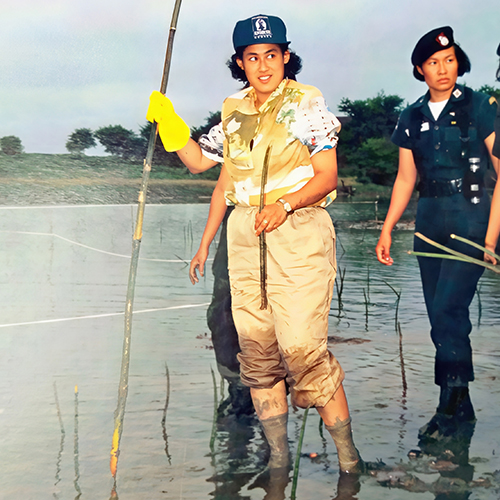
พ.ศ. ๒๕๓๘ (อุทยานธรรมชาติวิทยาฯ)
๒๕๓๘ ทรงเริ่มโครงการอุทยานธรรมชาติวิทยาฯ ตามพระราชดำริฯ
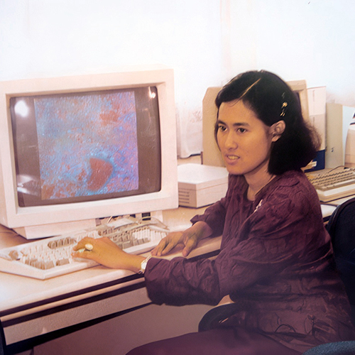
พ.ศ. ๒๕๓๘ - ๒๕๔๒
๒๕๓๘ ทรงเริ่มโครงการเทคโนโลยีสารสนเทศฯ
๒๕๔๒ ทรงจัดตั้งศูนย์ภูฟ้าพัฒนา จังหวัดน่าน เพื่อยกระดับคุณภาพชีวิตราษฎร
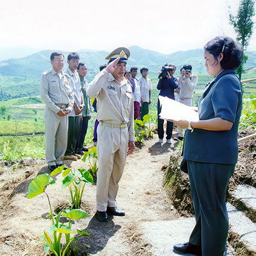
พ.ศ. ๒๕๕๓ - ๒๕๕๗
๒๕๕๓ ทรงเริ่มโครงการศูนย์พัฒนาพันธุ์สัตว์ อำเภอด่านซ้าย จังหวัดเลย
๒๕๕๔ ทรงเริ่มโครงการครูป่าไม้
๒๕๕๖ ทรงเริ่มโครงการสร้างป่า สร้างรายได้
๒๕๕๗ ทรงเปิดศูนย์กสิกรรม-ป่าไม้ หนองเต่า สปป.ลาว
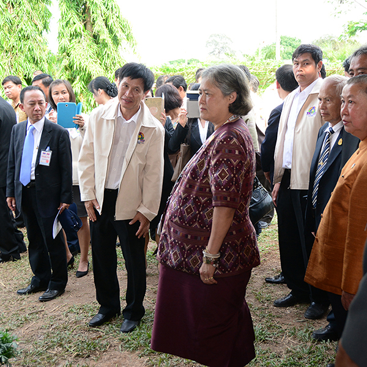
พ.ศ. ๒๕๕๙ - ๒๕६๒
๒๕๕๙ ทรงเริ่มโครงการทหารพันธุ์ดี
๒๕๖๑ ทรงเริ่มโครงการน้ำดื่มสะอาดในโรงเรียนตำรวจตระเวนชายแดน
๒๕๖๒ พระราชพิธีเฉลิมพระนามาภิไธย ในการพระราชพิธีบรมราชาภิเษก พุทธศักราช ๒๕६๒
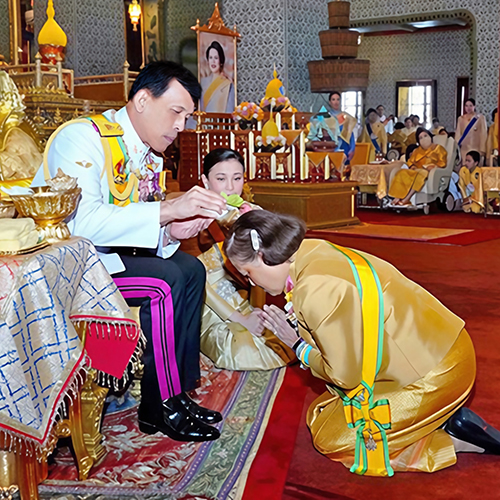
พ.ศ. ๒๕๖๓ - ปัจจุบัน
๒๕๖๓ เสด็จฯ ติดตามการดำเนินงาน รร. ตชด. เป็นครั้งที่ ๑,๐๐๐
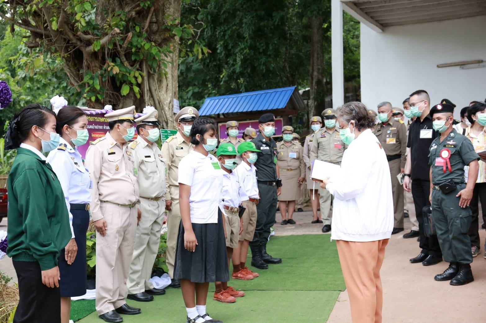
๒๕๖๓ ทรงตั้งศูนย์ผลิตพันธุ์สัตว์พระราชทาน ปากพนัง จ.นครศรีธรรมราช
ปัจจุบัน ทรงติดตามการดำเนินงานศูนย์สาขาของศูนย์ศึกษาการพัฒนาฯ สม่ำเสมอ